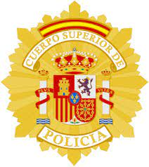
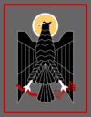

HISTORIA DE LA POLICÍA ESPAÑOLA
El Cuerpo Nacional de Policía, con su estructura y denominación actual tiene su origen directo en la Constitución de 1978, donde se le consagran dos misiones básicas: proteger el libre ejercicio de los derechos y libertades y garantizar la Seguridad Ciudadana.
A partir de este mandato Constitucional, en 1986 se promulgó la Ley Orgánica de Fuerzas y Cuerpos de Seguridad, una ley que unificaba los Cuerpos de Policía Nacional y Cuerpo Superior de Policía en el actual Cuerpo Nacional de Policía.
Eran dos cuerpos de naturaleza muy distinta, pues el cuerpo superior se dedicaba a la investigación, frente al otro cuerpo, que era fundamentalmente un cuerpo policial de orden público. Así pues, en el Cuerpo Nacional de Policía se integraron los funcionarios de los Cuerpos Superior de Policía y de Policía Nacional, que quedaron extintos.Con la entrada en vigor de una nueva ley en 2015, pasó a oficializarse la denominación Policía Nacional coexistiendo con la denominación original y con las siglas CNP a partir de su entrada en vigor.
| CUERPOS DE POLICÍA | ||
|---|---|---|
| CUERPO NACIONAL DE POLICÍA | CUERPO SUPERIOR DE POLICÍA | POLICÍA ARMADA |
|  |  | |